← 프로젝트 목록
03 · MOBILE
고용24 직업훈련 출결관리
사용자별 목적에 맞는 화면 구성과 직관적인 정보 구조로
탐색 부담을 줄이고, 더 효율적인 학습 경험을 제공하는 리디자인
- 구분
- 모바일 앱 UX/UI 리디자인
- 기간
- 2026.05 – 2026.06
- 역할
- UI, UX
- 기여도
- UI 40% · UX 35%
- Tool
- Figma · ChatGPT
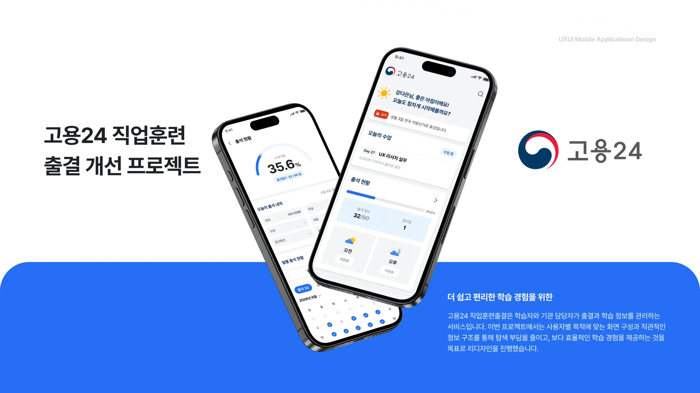
User Research & Problem Definition
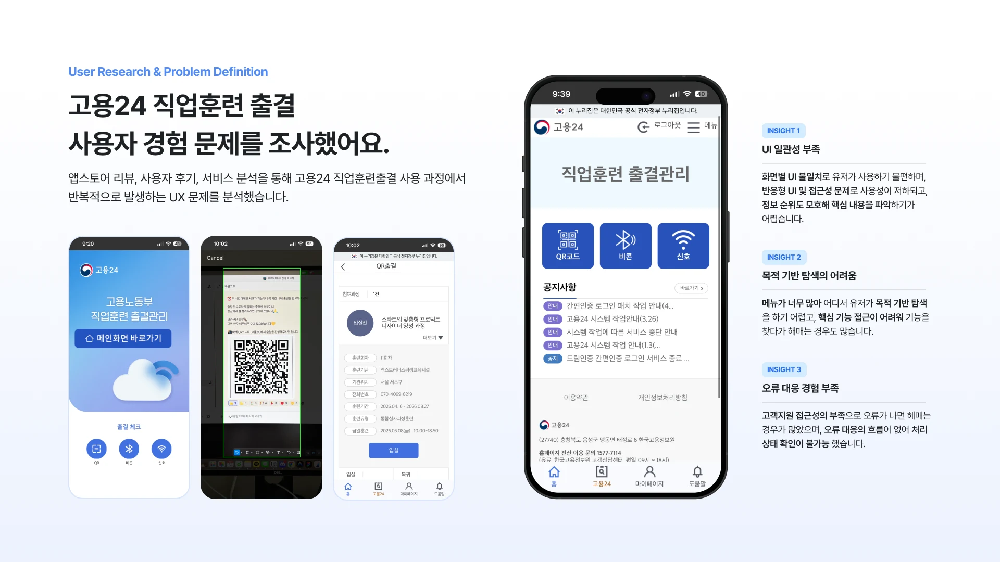
Insight
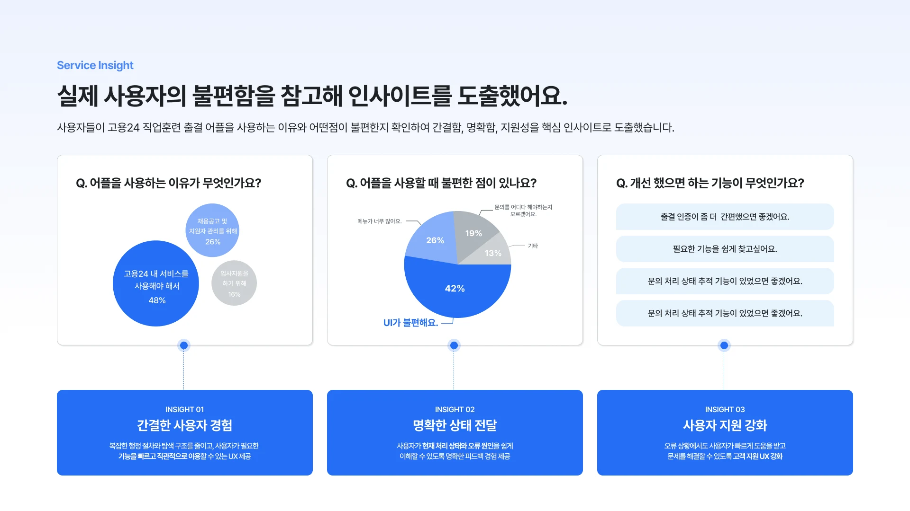
Persona & Journey Map
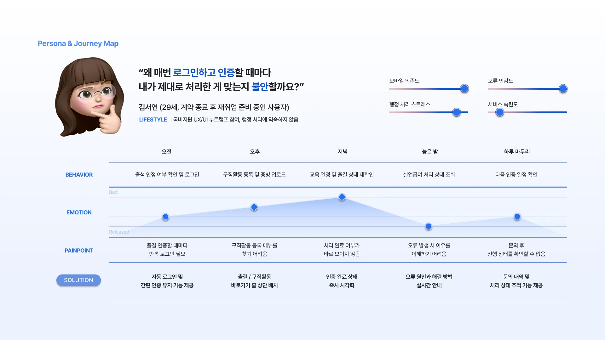
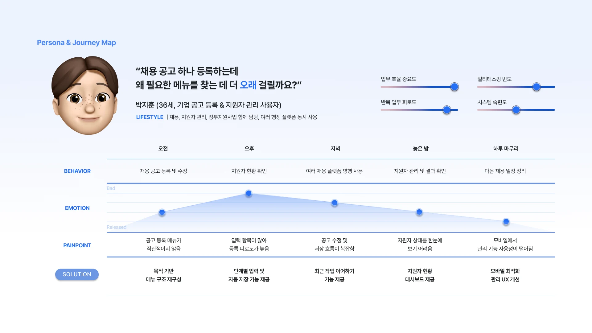
Service Goal & IA
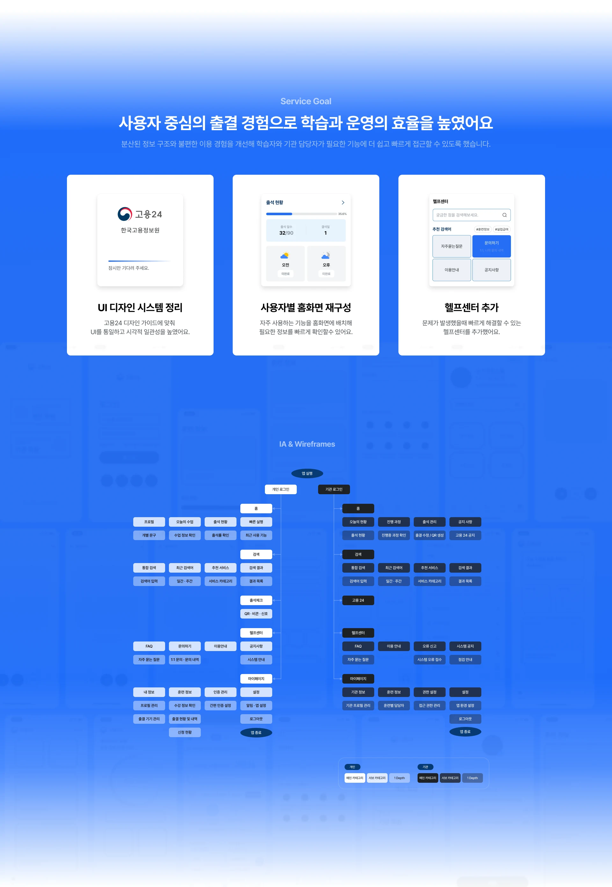
Design System
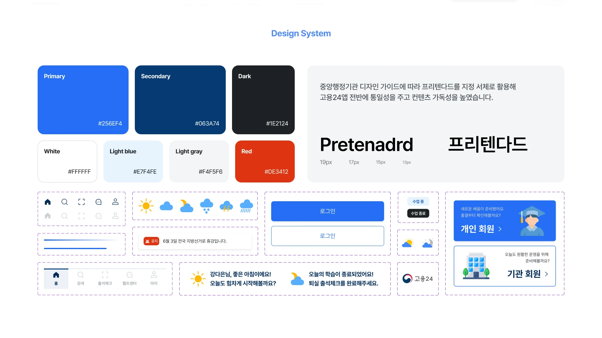
사용자 유형에 맞는 경험의 시작
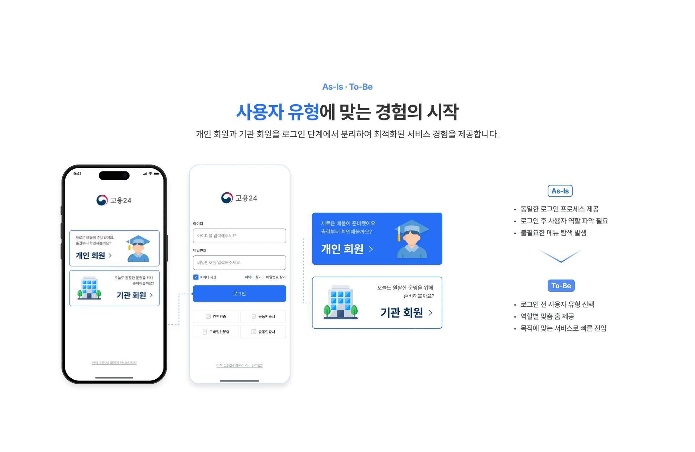
개인 홈
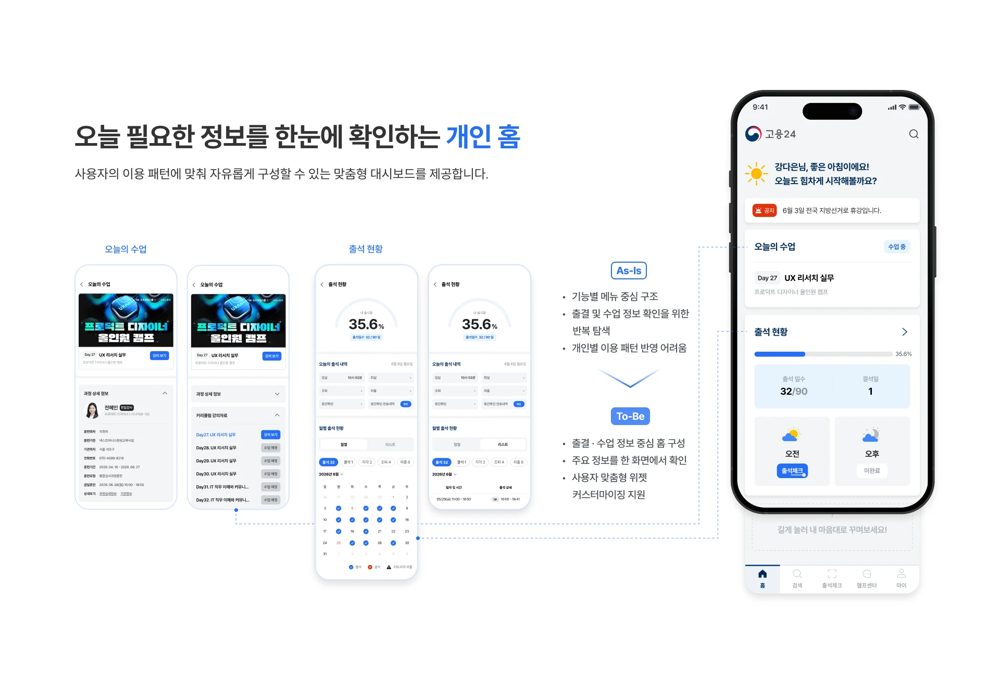
기관 홈
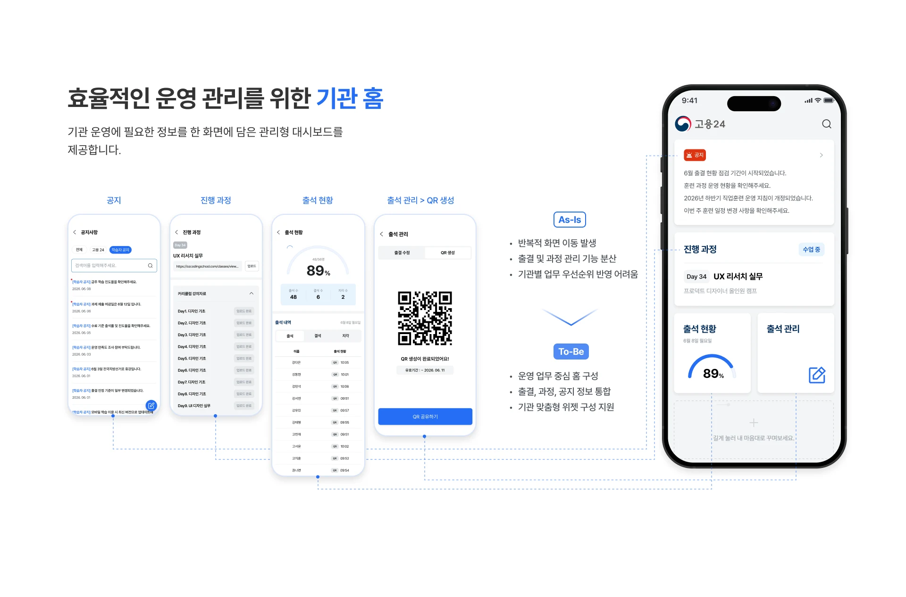
핵심 기능 개선
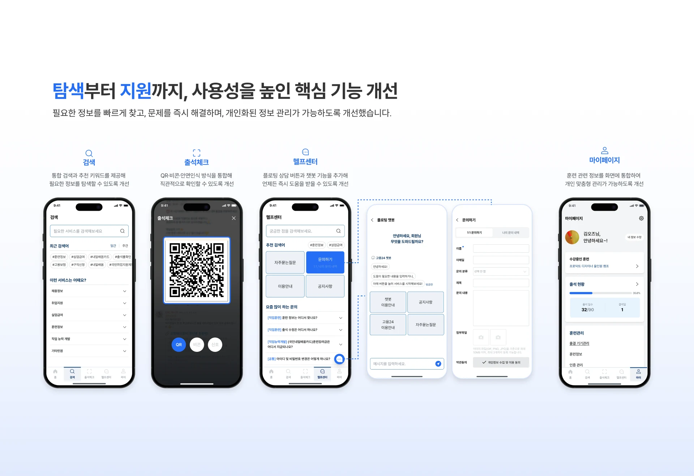
Thanks for watching
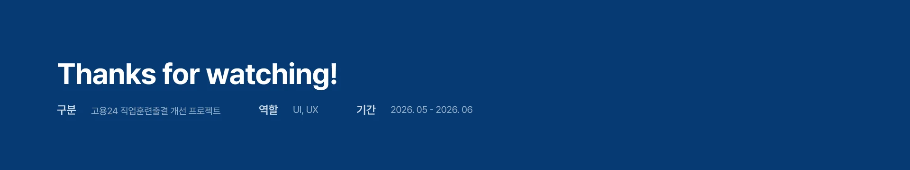